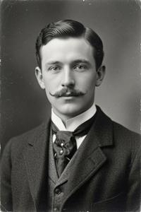
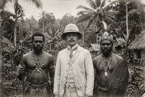
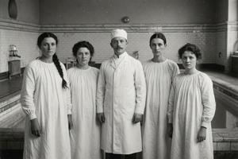

Зджеслав Блуха
Зджеслав Гостывоев Блуха (згур.: Zdjeslav Gostyvojev Bluxa; дегл.: Zđeslav Gostyvojev Bluxa; глаг.: ⰈⰌⰅⰔⰎⰀⰂ ⰃⰑⰔⰕⰬⰂⰑⰟⰂ ⰁⰎⰖⰢⰀ; 1861–1925) — верхнепаннонский деятель Славянского возрождения, политик, писатель, путешественник, изобретатель, пионер подводной археологии, псевдоучёный, целитель, оккультист, вероятно, шпион и первый премьер-министр независимой Верхней Паннонии. Сын видного слависта Гостывоя Блухи, он с юности совмещал одержимость собственной «венетской теорией» о славянах, явившихся на Землю с Венеры, с неутомимой практической предприимчивостью, и умел обращать одно в другое: мистический опыт — в лечебную методику, а лечебную методику — в политический капитал.
За без малого сорок лет его успели выслать из Италии как австрийского агента, арестовать в Германии как французского и преследовать в собственной стране как русского; он основал тайный культ, сеть клиник, газету и политический комитет, был знаком с Фламмарионом, Уильямом Джеймсом и Масариком, а в 1918 году возглавил первое правительство независимой Верхней Паннонии. Отправленный в отставку в 1924 году, он отправился искать остатки своей вымышленной цивилизации у берегов Новой Гвинеи и пропал без вести. Человек, всю жизнь слабо отличавший правду от вымысла, не оставил историкам возможностей отличить одно от другого в его собственной жизни.
- 1 Ранние годы (1861–1879)
- 2 Славянское Возрождение (1879–1884)
- 3 Путешествия (1884–1888)
- 4 Теория и практика погружения (1888–1894)
- 5 Эмиграция (1894–1896)
- 6 Исследования и женитьба (1897–1901)
- 7 В Российской империи (1901–1905)
- 8 В Азии и Америке (1905–1909)
- 9 Снова в России (1909–1917)
- 10 Рождение Первой Республики (1917–1918)
- 11 Во главе правительства (1919–1924)
- 12 Последняя экспедиция (1924–1925)
- 13 Заключение
Ранние годы (1861–1879)
Зджеслав родился в 1861 году; они с братом-близнецом Збыславом были старшими сыновьями Гостывоя Блухи — видного деятеля Славянского возрождения — и Магриты Бреговской, внебрачной дочери паннонского аристократа Лайоша Леонарда Брегови. Он был ребёнком любознательным, смышлёным, активным и изобретательным, и уже в детстве обнаруживал склонность к обману. Когда Зджеславу было пять лет, братья вместе выпали из лодки в воду: Збыслав утонул, Зджеслав выжил. Эта потеря оставила в нём неизгладимый след — судя по всем рассказам, он был глубоко привязан к своему близнецу.
Зджеслав учился в классической гимназии и посещал отцовскую славянскую воскресную школу. В 1877 году он поступил в Паннонский педагогический институт, учреждённый в том же году Гостывоем Блухой и Дометием Бобовым. В том же году отец и Бобов — пожизненные соперники и соратники — убили друг друга на своей последней дуэли, и шестнадцатилетний Зджеслав стал главой семьи. Он отнёсся к этой обязанности серьёзно и всю жизнь проявлял заботу о братьях, сёстрах и их детях.
Славянское Возрождение (1879–1884)
{kind=link}

Два года спустя, в 1879 году, Зджеслав стал неформальным лидером младопаннонцев — кружка энтузиастов Славянского возрождения, сложившегося среди студентов Педагогического института. В пору своего расцвета в 1880-е годы кружок дал стране немалую часть классики паннонского искусства и литературы: в его состав входили прозаики, композиторы, драматурги и художники. Более широкий круг участников устраивал культурные мероприятия и поддерживал творчество своих членов, а узкий внутренний кружок составлял тайное общество вокруг культа славянской богини Моры, которую олицетворяла сестра Зджеслава Кветана. По всем свидетельствам, этот культ был чистой воды выдумкой самого Зджеслава Блухи.
Благодаря участию в славянском движении Блуха сблизился со своим дядей по материнской линии Адальфридом Аттилой, главой дома Брегови, богатым аристократом и неутомимым путешественником, побывавшим на островах Малайского архипелага, в Африке и на Ближнем Востоке. Брегови открыл ему доступ к семейной библиотеке в Бреговском замке, в том числе к оккультным и алхимическим рукописям из собрания Гергея Габриэля, одного из прежних глав дома, масона и розенкрейцера с явной склонностью к мистике.
Знакомство с этой литературой явно проявилось в первой публикации Блухи1. В 1882 году он выдвинул псевдонаучную «венетскую теорию», вдохновлённую теософией, оккультными учениями, панславизмом и астрономическими книгами Камиля Фламмариона. Венеды, или венеты, — имя, под которым праславяне упоминаются в античных источниках, — были, по его теории, славяноязычными сверхлюдьми с Венеры, писавшими на прото-глаголице. Блуха перевернул общепринятую этимологию: богиню Венеру, по его версии, назвали в честь планеты, а не наоборот, — а сама планета носила имя венетов. Эти космические существа якобы «облагородили» и «просветили» коренных землян-«недочеловеков», построили великую доисторическую цивилизацию и в конце концов погибли в потопе — отголоски чего сохранились в преданиях об Атлантиде и Винете, причём, согласно реконструкции Блухи, именно предание о Винете было первоисточником.
Путешествия (1884–1888)
{kind=link}

Практические следствия теории не заставили себя ждать. В 1884 году, уверившись, что Венеция когда-то была венетским поселением, Блуха попытался вести подводную фотосъёмку в Венецианской лагуне. Итальянские власти заподозрили в нём австрийского шпиона, следившего за итальянским флотом, и выслали его из страны. В 1884–1887 годах он присоединился к тихоокеанской экспедиции Адальфрида Аттилы Брегови. Высадившись на островах Вентанат — небольших островках к востоку от Новой Гвинеи, — Блуха объявил их владением Верхней Паннонии на том основании, что там якобы некогда существовала колония венетов.
Блуха запатентовал фотоаппарат для подводной съёмки собственной усовершенствованной конструкции — много лет спустя его положительно оценит Жак-Ив Кусто. Во время экспедиции к Новой Гвинее он снимал ею то, что впоследствии выдал за руины затонувших построек. Снимки вышли смазанными и малоубедительными, однако по возвращении во Вроновицу в 1887 году Блуха устроил выставку этих фотографий и якобы найденных венетских артефактов — как установили позднейшие исследования, целиком поддельных.
Теория и практика погружения (1888–1894)
Вскоре после возвращения, в 1888 году, Блуха опубликовал философский трактат «Погружение как духовный опыт»2. В книге он описывал свои переживания во время глубоких погружений под воду и толковал их как мистические видения — хотя куда правдоподобнее они объяснялись гипоксическими галлюцинациями. По его словам, погружение на грань смерти открывает восприятие духовного мира: вода будто бы служит стихией, соединяющей материальное и нематериальное. С этой позиции Блуха трактовал и христианский обряд крещения:
Более древняя форма крещения погружением, сохранившаяся в восточном христианстве, глубокие купели древних баптистериев и бесчисленные тексты, описывающие крещение как смерть ветхого человека и рождение нового — всё это подсказывает, что суть изначального таинства состояла в достижении грани смерти через утопление; именно это совершил Иоанн Креститель над Иисусом, и именно это практиковалось в древней Церкви, пока смысл не забылся, и преображающая человека инициация не превратилась в чисто символический ритуал.
Блуха шёл дальше, доказывая, что этот опыт можно пережить коллективно; древние венеты якобы намеренно затопили свою цивилизацию ради обретения сверхъестественных способностей; то же самое они проделали ещё на Венере, прежде чем прибыть на Землю; а современная правящая элита Венеции — «криптославянская» по Блухе — возможно, с той же целью инженерно подстраивает медленное затопление своего города. Некоторые читатели ему поверили; среди них — композитор-младопаннонец Комаровицкий, которого эти идеи вдохновили на симфонию «Затонувший мир».
В 1888–1890 годах Блуха съездил в Вену, Прагу, Санкт-Петербург, Москву и Варшаву, читая лекции и выставляя свои новогвинейские «находки». Публика реагировала по-разному — одни считали его городским сумасшедшим или аферистом, другие искренне восхищались. Для широкой аудитории он излагал венетскую теорию, а для узкого круга избранных демонстрировал технику погружения как путь к мистическому опыту. Вернувшись во Вроновицу, он арендовал у Адальфрида Аттилы за символическую плату небольшой санаторий на бальнеологическом курорте Гниловоды и превратил его в «центр духовного исцеления».
Методика «исцеления погружением», т.наз. бафотерапия — сочетавшая минеральные ванны, лёгкую искусственную гипоксию и «духовное целительство» — была по сути радикальной версией модной в XIX веке гидропатии. Она, вероятно, не была чистым шарлатанством; Блухе помогал его брат Красимир, имевший медицинское образование. Бафотерапия оказалась довольно действенной против того, что тогдашняя медицина называла «истерией». Блуха стал популярным целителем и обзавёлся преданными пациентками, которые окружили его чем-то вроде культа.
Эмиграция (1894–1896)
{kind=link}

Одновременно Блуха продвигал прославянскую повестку: языковые права и расширение автономии Верхней Паннонии в составе Венгрии. Он примкнул к Паннонскому национальному союзу (ПНС), незадолго до этого основанному его зятем Злотаном Чиграем, мужем его сестры Кветаны. Осенью 1894 года ПНС имел реальные шансы получить большинство в Суборе — законодательном органе Верхней Паннонии, почти лишённом реальной власти и избираемом лишь пятью процентами граждан по имущественному цензу. Очень кстати разразился скандал: анти-ПНСовская пресса обвинила Блуху в «безнравственном поведении» по отношению к пациенткам.
Обвинения были не совсем беспочвенны. Методика бафотерапии требовала, чтобы целитель и пациентка купались вместе обнажёнными — ради «полного и ничем не стеснённого телесного контакта с акватической стихией». Блуха отрицал более полные телесные контакты, но клинику всё же пришлось закрыть, а ему самому и Красимиру — покинуть страну. Несмотря на эту историю, ПНС всё равно выиграл выборы.
В 1895 году Блуха перебрался во Францию, где издал переводы своих книг. В Париже он познакомился с Камилем Фламмарионом и попытался — безуспешно — обратить того в свою веру. Блуха вращался в кругу оккультиста Папюса (Жерара Анкосса) и обсуждал гипоксию и галлюцинации с физиологом Шарлем Рише, чьи собственные исследования психических феноменов склоняли его серьёзно отнестись к видениям Блухи. После этого к Блухе пришла некоторая известность, и он открыл под Парижем бафотерапевтическую клинику, снова с Красимиром в роли профессионального медика-консультанта.
Исследования и женитьба (1897–1901)
В 1897 году Блухе пришло письмо из Ванна — французского города, некогда основанного галльским племенем венетов. Анонимный местный житель писал:
Закон Посвящённых гласит: профан, узнавший Тайны, должен умереть либо быть принятым в Круг. Знайте же, что Мудрые решили вашу судьбу большинством лишь в один голос. Вы, профан, случайно открывший Тайны Сынов Венеры, признаны достойным Посвящения. Здесь, в городе Венетов, вас ждут.
Письмо было запечатано «венетским» символом, который Блуха сам же изобрёл для украшения своих сфабрикованных экспонатов. Тем не менее, он поверил, оставил клинику на Красимира и отправился в Ванн. Там он обнаружил, что письмо написала психически неуравновешенная девушка Жюли Мирамбо, которая сама уверовала в собственные фантазии, навеянные сочинениями Блухи.
Блуха взялся лечить у Жюли «истерию», и вскоре между ними возникла связь. Заодно в Ванне он предпринял ещё одну подводную экспедицию и испытал новое изобретение — эхолитоскоп, примитивный сонар для поиска подводных каменных построек. Исследования пришлось прервать, когда брат Жюли Огюст, лейтенант французской армии, потребовал, чтобы Блуха женился на его сестре.
Вместо этого Блуха бежал в Германию. В 1899 году под Данцигом он предпринял новую экспедицию по поиску Винеты, но его арестовала немецкая полиция по обвинению в шпионаже — на этот раз в пользу Франции против германского флота. Он перебрался в Санкт-Петербург, но в 1901 году брат и сестра Мирамбо разыскали его и там, и Блухе пришлось наконец жениться на Жюли, к тому времени уже родившей ему в 1899 году сына Камиля.
В Российской империи (1901–1905)
В Санкт-Петербурге Блуха читал лекции о бафотерапии в клиническом кружке Владимира Бехтерева и сблизился с придворным врачом Петром Бадмаевым, сочетавшим тибетскую медицину с модным у столичной элиты оккультизмом. Зоолог Николай Вагнер, давний сторонник спиритизма в российских академических кругах, испытал гипоксически-трансовую методику Блухи на добровольцах из собственной лаборатории.
Эти связи оказались небесполезны. В 1903 году Блуха представил свой эхолитоскоп техническому комитету российского флота в качестве детектора мин. Позже он оправдывался:
Я всего лишь хотел получить финансирование для дальнейшей разработки эхолитоскопа, исключительно для целей подводной археологии. Научный мир не заинтересовался; я решил привлечь интерес военных. Кто же мог знать, что всё зайдёт настолько далеко?
После успешных испытаний в Кронштадте в 1904 году штаб флота утвердил применение прибора в войне с Японией. Поскольку управлять эхолитоскопом умел только сам Блуха, его прикомандировали к флоту как гражданского подрядчика и отправили с эскадрой адмирала Рожественского на Тихий океан. Его корабль был подбит в Цусимском сражении; Блуха, превосходный пловец, спасся сам и спас одного матроса, но попал в японский плен.
В Азии и Америке (1905–1909)
В плену Блуха обратился в австрийское посольство, и австрийские дипломаты добились от Японии его выдачи как подданного Австро-Венгрии, желая допросить его о службе на российском флоте. В 1905 году Блуху передали под австрийский конвой и повезли домой, но в Гонконге он каким-то образом загипнотизировал конвоиров, обобрал их и сел на первый же корабль, отплывавший в Сан-Франциско.
В Америке у Блухи уже были свои поклонники. Бостонская богатая наследница Шарлотта Уинтроп Пибоди в своё время, ещё до скандала 1894 года, приезжала в Гниловоды лечить «истерию» и с тех пор следила за карьерой Блухи, финансируя американские издания его книг. Теперь она выхлопотала ему почётную докторскую степень от Медицинской школы штата Мэн при Боудин-колледже в Брансуике — небольшом учебном заведении, впоследствии закрытом за низкий уровень преподавания. Она же профинансировала новую клинику, открытую там Блухой в 1906 году, и энергично рекламировала её в бостонском обществе. Блуха переписывался с гарвардским психологом Уильямом Джеймсом о природе вызванных гипоксией видений и подружился с исследователем психических феноменов Хервардом Каррингтоном, который в то время готовился привезти в Америку для экспериментов итальянскую спиритку Эузапию Палладино.
Кончилось всё трагедией: в 1909 году одна из пациенток утонула прямо во время сеанса бафотерапии, и Блухе пришлось бежать из страны. Вернуться на родину он по-прежнему не мог из-за неснятых подозрений в шпионаже в пользу России, поэтому вместо этого вернулся в Санкт-Петербург — к жене и сыну, которых не видел пять лет.
Снова в России (1909–1917)
В Санкт-Петербурге выяснилось, что Жюли успела перейти в православие, вошла в ближний круг преданных почитательниц Распутина и в 1906 году родила ещё одного сына, Серафима, от неизвестного отца. Брак, тем не менее, сохранился. Когда весть об американском скандале дошла до Европы, Блуха вовсе оставил медицинскую практику и обратился к политике.
В Санкт-Петербурге он застал растущую паннонскую политическую диаспору. Ещё в 1896 году венгерские власти распустили Субор, где преобладал ПНС. Последовали репрессии против славянских автономистов; они радикализировали движение и вызвали волну политической эмиграции — во Францию и Британию, но также и в Россию, которая издавна покровительствовала славянским движениям внутри Австро-Венгрии.
Блуха сблизился с этими эмигрантскими кругами и в 1912 году выпустил книгу о перспективах паннонской независимости — на этот раз без всякой мистики и лженауки, с прямой националистически-демократической программой. Гораздо радикальнее, чем в молодости, он теперь требовал роспуска империи Габсбургов, независимой Республики Верхняя Паннония и либеральных внутренних реформ, включая светское образование и права женщин. Эта книга сделала его влиятельной фигурой в диаспоре.
Когда в 1914 году началась война, российское правительство сочло Блуху полезным инструментом для подрыва Австро-Венгрии изнутри. Оно профинансировало его газету «За свободную Паннонию» и поддержало политическую организацию под его руководством — Паннонский комитет в Петрограде. С 1915 года Комитет начал вербовать паннонских военнопленных в вооружённое формирование, впоследствии ставшее Паннонским легионом. Кроме того, в эти годы Блуха наладил контакты с лидерами чехословацкого движения — Масариком, Бенешем и Штефаником, заручившись их поддержкой в борьбе за независимость Верхней Паннонии, что немало помогло ему в дальнейшем. После Февральской революции Блуха вывез жену и детей через нейтральные Швецию и Норвегию в Англию, а затем во Францию.
Рождение Первой Республики (1917–1918)
В Париже Блуха встретил своего брата Красимира, который всё ещё руководил довольно популярной гидротерапевтической клиникой, далеко отойдя от изначальных идей бафотерапии, и шурина Огюста, дослужившегося до полковника Генерального штаба. Пользуясь этими связями, Блуха продолжил политическую деятельность уже под французским патронатом. Вероятно, через каналы французской разведки он вступил в тайную переписку с деятелями ПНС, которые продолжали легально действовать внутри Верхней Паннонии, такими как его зять Злотан Чиграй и Отто Островит Брегови, сын Адальфрида Аттилы. Летом 1918 года, накануне военного краха Австро-Венгрии, эти и другие деятели образовали Национальный Комитет Верхней Паннонии. Осенью, с её окончательным крахом, настал их час.
16 октября 1918 года манифест императора Карла разрешил народам монархии, включая славянские народы венгерской половины, образовывать национальные комитеты. Уже фактически существовавший Национальный Комитет обрёл легальный статус и политический вес самой авторитетной организации в стране. Бан Верхней Паннонии, лишившийся всякой опоры в Будапеште, 29 октября подал в отставку и передал ему полномочия. 6 ноября Комитет провозгласил независимость Верхней Паннонии.
Согласия внутри Комитета не было. Згурское большинство — включая Чиграя и Брегови — настаивало на полной независимости. Деглянское меньшинство добивалось объединения с новообразованным Государством словенцев, хорватов и сербов — федерацией южнославянских народов бывшей Австро-Венгрии. Венгерское население, в Комитет не допущенное, требовало сохранить унию с Венгрией. В ноябре и декабре по стране прокатились стычки с демобилизованными венгерскими солдатами, возвращавшимися с фронта.
В Париже Блуха тем временем добивался у французского правительства и американских дипломатов признания и поддержки паннонской независимости, и преуспел. В декабре 1918 года он вместе с Огюстом Мирамбо приехал во Вроновицу. Комитет принял обоих в свой состав, ценя их связь с Парижем. Накануне заседания 20 декабря, на котором Комитет должен был сформировать Временное правительство, Марта Брегови, жена Отто Островита и бывшая пациентка Блухи, написала записку мужу:
Помни, мой огурчик, что когда будешь выступать в поддержку З., ты не должен напирать на то, что он гений, провидец и единственная надежда страны; мы оба это знаем, но такой аргумент только разозлит врагов и оттолкнёт колеблющихся. Лучше настаивай со всей убеждённостью — потому что это чистая правда — что З. имеет международное имя и хорошие связи с французами, американцами и чехословаками, а в данный момент внешняя поддержка — вопрос выживания нашей нации; словом, добейся для него кресла, как минимум, министра иностранных дел, а иначе я буду сердита и обижена.
Эта аргументация возымела успех: вопреки возражениям скептиков, называвших Блуху «шутом, проходимцем и шпионом всех разведок», в новом кабинете он получил сразу две ключевых должности — министра иностранных дел и премьера. Первым же указом он назначил полковника Мирамбо командующим Паннонской национальной армией — которую только предстояло сформировать.
Во главе правительства (1919–1924)
Молодой республике досталось тяжёлое наследство. Экономика лежала в руинах, извне угрожали одновременно Венгрия и Королевство сербов, хорватов и словенцев (КСХС), международное признание оставалось непрочным, а согласия не было даже внутри самого правительства: дегляне по-прежнему настаивали на присоединении к КСХС. Гражданская администрация, унаследованная от империи, продолжала работать как отлаженный механизм, но армии у страны не было — её предстояло спешно создавать из демобилизованных паннонских солдат бывшей австро-венгерской армии, в массе своей уставших от четырёх лет войны.
В этих сложнейших условиях Блуха, не имевший никакого административного опыта, не только выжил политически, но и достиг серьёзных успехов. Мирамбо в короткий срок собрал боеспособное ядро Паннонской национальной армии (ПНА) и с его помощью усмирил венгерские выступления. Вскоре выросла другая угроза. Паннонский легион под командованием Дрогана Гловача весной и летом 1919 подавил коммунистическое восстание и остался единственной по-настоящему дисциплинированной и опытной военной силой в стране. Блуха обезвредил Гловача без открытого столкновения: в 1920 году его отправили с военно-дипломатической миссией в Париж и Лондон, а в его отсутствие Легион влили в состав ПНА под командованием Мирамбо — фигуры куда менее опасной, поскольку иностранец не мог претендовать на высшую власть. Внутриполитическая обстановка стабилизировалась. На Версальской конференции Блуха добивался международного признания независимости; итогом стал компромисс: окончательное признание обусловили проведением плебисцита.
В 1920 году прошли первые парламентские выборы. Большинство получил ПНС, Блуха остался премьером, а президентское кресло — по конституции чисто символическое — досталось Чиграю. Блуха сразу взялся за реформы в национал-демократическом духе: секуляризацию образования и расширение избирательных прав. Программа встретила сопротивление даже внутри собственной партии — далеко не все в ПНС разделяли радикализм Блухи, — а церковь выступила против секуляризации напрямую: паннонское общество в целом оказалось консервативнее своего премьер-министра. Паннонский язык получил статус государственного, началась «языковая чистка», были утверждены государственные символы. В октябре 1920 года состоялся обещанный плебисцит, подтвердивший выбор независимости, что было победой Блухи и ПНС.
Блуха опирался на плотную сеть поддержки внутри и вне ПНС — людей, связанных родством, старой дружбой или сектантскими узами адептов венетской теории и практиков бафотерапии. Этого было достаточно для удержания власти, но недостаточно для массовой поддержки избирателя. Кабинет Блухи, увлечённый нациестроительством и культурно-реформистскими проектами, плохо справлялся с экономическими проблемами. Избиратель всё больше разочаровывался и уходил к социал-демократам. На выборах 1924 года ПНС удержала первое место, но лишилась большинства. Чтобы сохранить власть, ей пришлось пойти на коалицию с более консервативными христианскими социалистами, а те выставили условием отставку самого Блухи как чрезмерного радикала. Так в феврале 1924 года завершилось премьерство Блухи, а с ним и политическая карьера.
Последняя экспедиция (1924–1925)
Блуха воспринял свою отставку тяжело: собственная партия продала его ради коалиционной сделки, а неблагодарные паннонцы, которых он же сам и наделил избирательным правом, отказали в доверии. Но характер его был не таков, чтобы пребывать в депрессии. Блуха всё ещё был полон энергии и находился в прекрасной для своих 63 лет физической форме. Он публично заявил, что уходит из политики и возвращается к изобретательству и научной (как он это называл) работе.
Летом 1924 года Блуха с небольшой группой помощников, включая сына Камилля, уехал в Австралию. В Кэрнсе он купил небольшое судно-люггер, назвал его «Венера» и стал готовиться к экспедиции. Он собирался вернуться к берегам Новой Гвинеи и вновь исследовать окрестности островов Вентанат, на этот раз при помощи усовершенствованного эхолитоскопа и современной водолазной техники. Он уверял, что рассчитывает найти серьёзные, окончательные доказательства следов венетской цивилизации на дне Тихого океана.
25 апреля 1925 года, в конце штормового сезона, «Венера» вышла из Кэрнса, пересекла Коралловое море при попутном пассате и 2 мая зашла в Порт-Морсби, чтобы получить официальное разрешение австралийской администрации Папуа на плавание в восточных архипелагах и купить последние уточнённые карты Адмиралтейства. 18 мая «Венера» пристала к острову Самарай, «столице» Восточной Новой Гвинеи, крошечному островку, застроенному складами, конторами скупщиков жемчуга и торговцев копрой. Здесь необходимо было нанять местных папуасов в качестве лоцманов и матросов, знающих местные течения. 6 июня «Венера» вышла в море. Больше её никто не видел.
Архипелаги к востоку от Новой Гвинеи — сложнейший лабиринт вулканических островов, приливно-отливных течений и неотмеченных на картах коралловых банок; это тропические воды, где корпус судна за две недели обрастает ракушками до полной потери управляемости; это очаг тяжелейшей формы малярии — черноводной лихорадки; это острова, заселённые в то время неконтактными, зачастую агрессивными папуасскими и меланезийскими племенами. Рации на «Венере» не было — небольшое судно, и без того перегруженное водолазной и эхолитоскопической аппаратурой, просто не могло вместить дополнительное громоздкое оборудование и свинцовые аккумуляторы. Словом, люггер мог безвестно погибнуть по сотне причин. Несколько более странно, что даже остатки «Венеры» никогда не были найдены.
Заключение
Будучи крайне спорной фигурой при жизни, даже в собственной партии, Блуха сразу после смерти был официально канонизирован как отец республики и одна из главных фигур паннонского национального пантеона. Всё, что было до — венетская теория, бафотерапия, шпионские и медицинские скандалы, — в этой версии биографии было затушёвано или подано как эксцентричные увлечения будущего государственного мужа. Уже в 1926 году улицу во Втором округе Вроновицы, на которой родился Блуха, назвали в его честь, а в 1927 ему поставили памятник.
При диктатуре и монархии Гловача бывший премьер превратился в фигуру умолчания. Единственным отцом независимой Верхней Паннонии теперь был Гловач; рядом с ним не было места другим фигурам. В мемуарах самого короля Дрогана и исторических трудах, изданных при нём, Блуха упоминался вскользь в ряду прочих бездарных политиканов, чуть не загубивших республику. Памятник, впрочем, не снесли и улицу не переименовали. Это сделали лишь венгерские оккупанты, стремившиеся стереть вообще всю память о паннонской независимости. При коммунистах Блуха считался ограниченным буржуазным националистом, одним из виновников расправы с Паннонской Советской Республикой, словом, тоже отрицательным персонажем.
Посткоммунистические власти попытались вновь героизировать Блуху, ища себе идеологическую опору в демократическом периоде Первой Республики. Но згуро-деглянский раскол похоронил эти идеологические поиски. Если для згурцев Блуха остаётся почитаемой фигурой, хотя и с некоторыми оговорками о «тёмных страницах биографии», то для деглян он — ярчайший представитель ненавистного «згурского клана», группировки родственно и идейно связанных политиков згурского происхождения, навязавших молодой республике свои — згурские — интересы под видом общенациональных.
Биографы, стремящиеся быть нейтральными, обычно характеризуют Блуху как талантливого мистификатора, которому однажды представился случай применить свой дар убеждения на политической сцене — и он этим случаем блестяще воспользовался. Сложно сказать, было ли это государственной мудростью или очередной удачной аферой. Исчезновение «Венеры» в 1925 году по сей день служит предметом романтических теорий. Блуха, в конце концов, всю жизнь учил, что гибель в воде может быть переходом, а не завершением; вряд ли он сам мог бы выбрать для себя более подходящий финал.
Категории: Авторы, Эпоха Габсбургов, Межвоенная эпоха, Персоналии, Политики, Славянское Возрождение